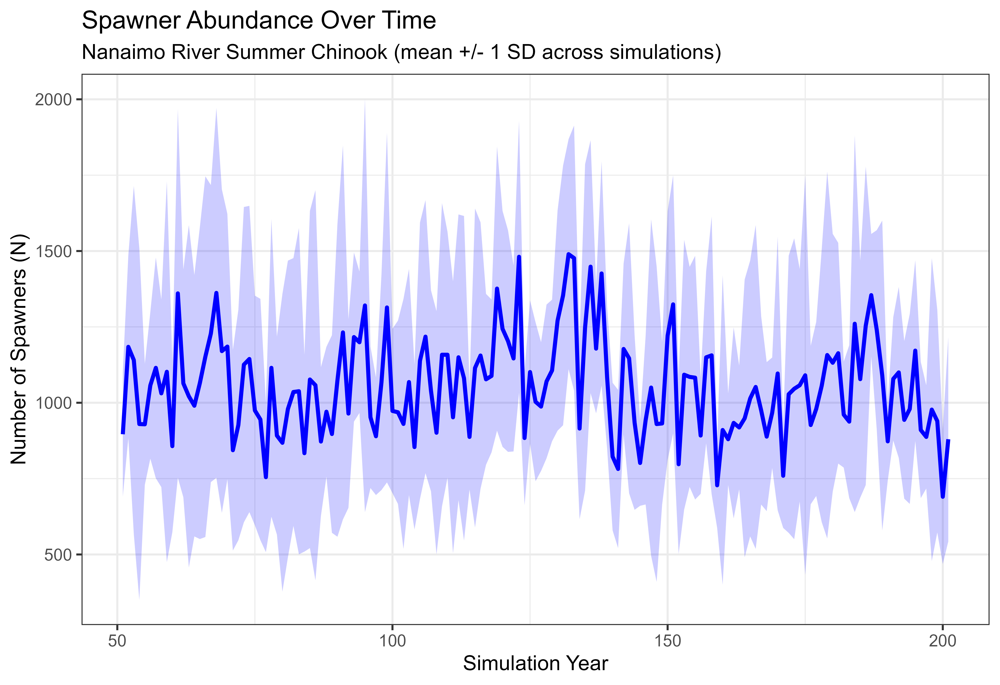
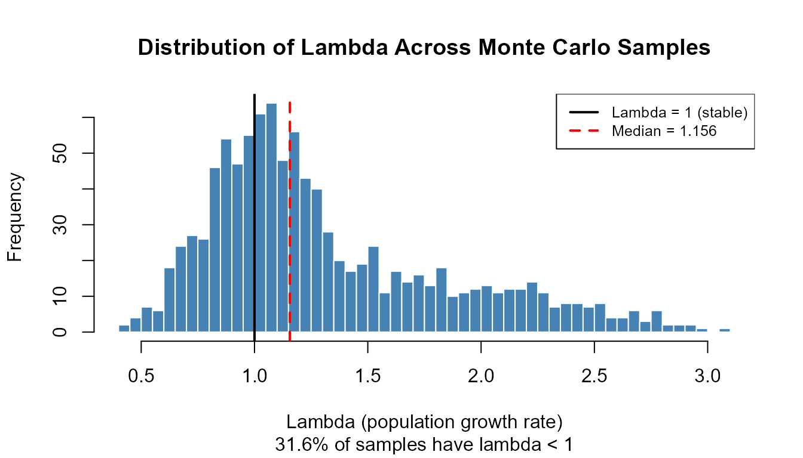
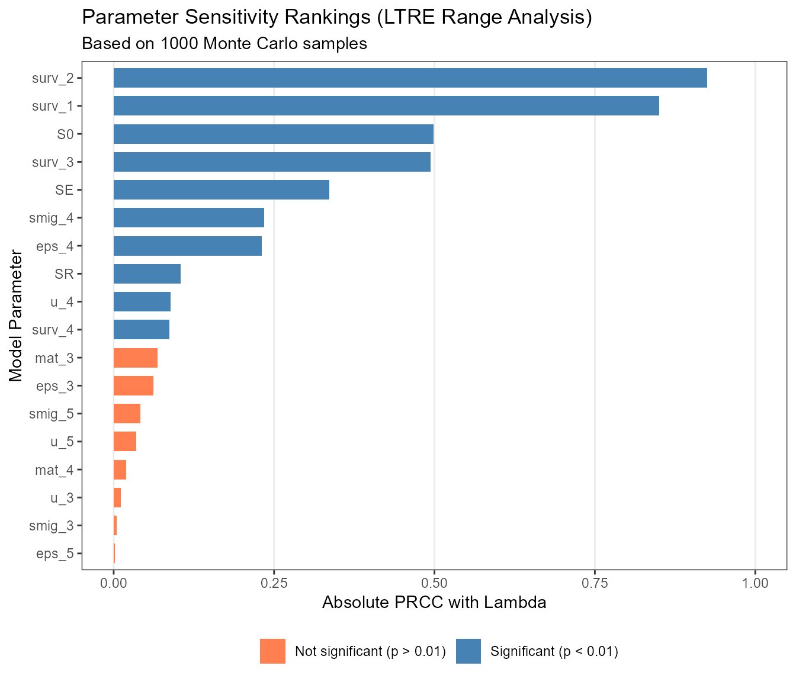

5. Population Model Evaluation
2026-04-22
Source:vignettes/a06-population-model-sensitivity.Rmd
a06-population-model-sensitivity.RmdOverview
This tutorial demonstrates how to evaluate and compare population model results across different species profiles and parameter sets. Understanding the sensitivity of model outputs to input parameters is essential for identifying which vital rates matter most and where uncertainty in the data translates into uncertainty in population projections.
We cover two complementary approaches:
- Profile comparison — Swap in different life cycle profiles for the same study system and compare spawner abundance trajectories. This shows how demographic differences between populations (or parameter uncertainty between data sources) affect projected outcomes.
- LTRE range analysis — Use Monte Carlo sampling and Partial Rank Correlation Coefficients (PRCC) to systematically quantify which parameters have the greatest influence on population growth rate (lambda).
Prerequisites
Before starting this tutorial, you should:
- Complete Tutorial 3: Population Model Overview to understand life cycle profiles, density dependence, and the population model functions
- Complete Tutorial 4: Population Model Batch Run for experience with batch processing
- Review the Life Cycle Model chapter of the CEMPRA Guidance Document for detailed parameter descriptions
Part 1: Comparing Species Profiles
In this section we use stressor-response and stressor-magnitude values from the Nanaimo River Chinook salmon dataset, but swap out the life cycle profile to compare how different parameter sets affect population projections. The following populations are available as example profiles:
- Nanaimo River Summer Chinook (vital rates from DFO-RAMs)
- Chehalis River Spring/Fall Chinook in coastal Washington (parameters from Beechie et al., 2021)
- Columbia River Chinook from Wenatchee River (parameters from Honea et al., 2009)
- Nicola River spring-run Chinook from the interior of BC (DFO-RAMs 2021)
Load Input Data
We load the Nanaimo River stressor data and habitat capacities as a starting point. The life cycle profile will be swapped out in subsequent sections.
library(CEMPRA)
library(ggplot2)
library(dplyr)
# Set seed for reproducibility
set.seed(123)
# Stressor-magnitude workbook (location-specific stressor values)
fname <- system.file("extdata/nanaimo/stressor_magnitude_nanaimo.xlsx", package = "CEMPRA")
dose <- StressorMagnitudeWorkbook(filename = fname)
dose$SD <- 0 # Remove stochastic variation in stressor magnitudes for cleaner comparison
# Stressor-response workbook (dose-response curves)
fname <- system.file("extdata/nanaimo/stressor_response_nanaimo.xlsx", package = "CEMPRA")
sr_wb_dat <- StressorResponseWorkbook(filename = fname)
# Location and stage-specific habitat capacities
filename <- system.file("extdata/nanaimo/habitat_capacities_nanaimo.csv", package = "CEMPRA")
habitat_capacities <- read.csv(filename, stringsAsFactors = FALSE)
# Life cycle parameters (starting with Nanaimo summer Chinook)
filename_lc <- system.file("extdata/nanaimo/species_profiles/nanaimo_comp_ocean_summer.csv", package = "CEMPRA")
life_cycle_params <- read.csv(filename_lc)Target Populations
The habitat capacities file lists the target populations. The density-dependent constraints estimate capacities in the absence of any stressors and assume that 100% of the stream area is suitable for spawning (e.g., gravel coverage = 100% and spawning suitability = 100%). Specific stressors targeting capacities will reduce these numbers to more realistic estimates.
print(habitat_capacities)
#> HUC_ID NAME k_stage_0_mean k_stage_Pb_1_mean k_stage_B_mean
#> 1 1 Fall Lower 627594 NA 38073
#> 2 2 Summer - Lower 1247555 NA 15384
#> 3 3 Summer - Upper 913589 NA 20943
# Focus analysis on Lower Nanaimo River Summer-Run Chinook (HUC_ID = 2)
HUC_ID <- 2Run the Population Model
We run the population model using output_type = "full"
(the default) to access the complete output structure, including
stage-specific abundances for each Monte Carlo simulation. This is
necessary for extracting spawner counts by age class.
data <- PopulationModel_Run(
dose = dose,
sr_wb_dat = sr_wb_dat,
life_cycle_params = life_cycle_params,
HUC_ID = 2, # Lower Summer-run Chinook
n_years = 200, # Extended projection to see long-term dynamics
MC_sims = 5, # Monte Carlo simulations
habitat_dd_k = habitat_capacities # Location-specific carrying capacities
)
# The "full" output is a nested list
names(data)
#> [1] "ce" "baseline" "MC_sims"
# 5 Monte Carlo replicates for the CE scenario
length(data$ce)
#> [1] 5
# Each replicate contains population vectors, matrices, and diagnostics
names(data$ce[[2]])
#> [1] "pop" "N" "lambdas" "info"
# Stage-specific abundance over time (last 6 years of replicate 2)
tail(round(data$ce[[2]]$N, 0))
#> K1 K2 K3 K4 K5 K6 K7
#> [196,] 70405 3911 2271 403 209 214 292
#> [197,] 22547 3119 2102 728 226 474 163
#> [198,] 42406 850 1535 652 352 882 572
#> [199,] 91737 1305 476 471 105 630 528
#> [200,] 57121 4052 641 158 147 210 389
#> [201,] 77627 3027 2307 192 508 259 127Visualize the Time Series Projections
The pop_model_get_spawners() helper function extracts
spawner abundance from the full output, combining results across Monte
Carlo simulations into a clean data frame. We filter out the first 50
years of “burn-in” to focus on the equilibrium dynamics.
# Extract spawner abundance from the full output
spawners <- pop_model_get_spawners(
data = data,
life_stage = "spawners",
life_cycle_params = life_cycle_params
)
head(spawners)
#> location_id rep_id year spawners
#> 1 2 1 1 15384
#> 2 2 1 2 1111
#> 3 2 1 3 1262
#> 4 2 1 4 2256
#> 5 2 1 5 1989
#> 6 2 1 6 1359
# Summarize across simulations: mean and SD of spawners per year
summary_data <- spawners %>%
filter(year > 50) %>%
group_by(location_id, year) %>%
summarize(
mean_spawners = mean(spawners),
sd_spawners = sd(spawners),
.groups = "drop"
)
# Plot mean spawner trajectory with uncertainty ribbon
ggplot(summary_data, aes(x = year, y = mean_spawners)) +
geom_line(color = "blue", linewidth = 1) +
geom_ribbon(
aes(ymin = mean_spawners - sd_spawners, ymax = mean_spawners + sd_spawners),
fill = "blue", alpha = 0.2
) +
labs(title = "Spawner Abundance Over Time",
subtitle = "Nanaimo River Summer Chinook (mean +/- 1 SD across simulations)",
x = "Simulation Year", y = "Number of Spawners (N)") +
theme_bw() +
theme(legend.position = "bottom")
The blue ribbon shows the inter-simulation variability in spawner abundance. A wide ribbon indicates high stochastic variability, while a narrow ribbon suggests the population dynamics are relatively stable across replicates. Both the mean trajectory and the width of the ribbon are informative — they tell you about the expected population size and the uncertainty around that expectation.
Part 2: LTRE Range Analysis (Global Sensitivity)
A Life Table Response Experiment (LTRE) identifies which demographic
parameters have the greatest influence on population growth rate. The
pop_model_ltre_range() function implements an
uncertainty-based LTRE approach: rather than perturbing
each parameter by a fixed amount, it samples from user-defined
probability distributions and uses Partial Rank Correlation
Coefficients (PRCC) to quantify the relationship between each
parameter and lambda (the population growth rate).
This approach is particularly valuable for:
- Identifying key vital rates — Which parameters, given their realistic range of uncertainty, have the most influence on whether the population grows or declines?
- Prioritizing data collection — Parameters with high PRCC and wide uncertainty ranges are candidates for additional field studies.
- Understanding risk — What is the probability that lambda falls below 1 (population decline) given current parameter uncertainty?
See the Life Cycle Model chapter of the guidance document for more background on the vital rates and their biological interpretation.
Preparing the Input File
The LTRE range analysis requires an extended life cycle CSV with additional columns that specify how each parameter should be sampled:
| Column | Description |
|---|---|
Parameters |
Human-readable parameter description |
Name |
Parameter code used by the model (e.g., SE,
surv_1) |
Value |
Central value (used as mean for normal/beta, mode for PERT) |
Notes |
Optional notes or data sources |
Test_Parameter |
TRUE to include in sensitivity analysis,
FALSE to hold fixed |
Distribution |
Sampling distribution: "normal", "beta",
or "pert"
|
SD |
Standard deviation (required for normal and beta distributions) |
Low_Limit |
Lower bound for sampling |
Up_Limit |
Upper bound for sampling |
Parameters marked Test_Parameter = FALSE (e.g.,
Nstage, compensation ratios) are held constant across all
simulations. Only parameters marked TRUE are sampled and
included in the PRCC analysis.
# Load the example LTRE input file
lc_file <- system.file("extdata/ltre/life_cycles_input_ltre.csv", package = "CEMPRA")
life_cycle_ltre <- read.csv(lc_file)
# View the first few rows to see the extended column structure
head(life_cycle_ltre[, c("Name", "Value", "Test_Parameter", "Distribution", "SD", "Low_Limit", "Up_Limit")], 10)
#> Name Value Test_Parameter Distribution SD Low_Limit Up_Limit
#> 1 Nstage 5 FALSE NA NA NA
#> 2 anadromous TRUE FALSE NA NA NA
#> 3 k 5000 FALSE NA NA NA
#> 4 events 1 FALSE NA NA NA
#> 5 eps_3 3000 TRUE normal 250.000 5e+02 5e+03
#> 6 eps_4 4000 TRUE normal 500.000 1e+03 6e+03
#> 7 eps_5 4810 TRUE normal 600.000 1e+03 7e+03
#> 8 int 1 FALSE NA NA NA
#> 9 SE 0.2 TRUE beta 0.036 5e-02 8e-01
#> 10 S0 0.3 TRUE pert NA 2e-02 4e-01Note how structural parameters (Nstage,
anadromous, k) and compensation ratios
(cr_E, cr_0, etc.) have
Test_Parameter = FALSE — these define the model structure
and are not varied. Vital rates like survival (SE,
S0, surv_1), fecundity (eps_3,
eps_4), and maturity (mat_3,
mat_4) are marked TRUE and will be
sampled.
Running the Analysis
The pop_model_ltre_range() function draws
n_samples Monte Carlo samples from the specified
distributions, builds a population matrix for each sample, calculates
lambda, and then computes PRCC values to rank parameter importance.
# Run the LTRE range analysis
result <- pop_model_ltre_range(
life_cycle_params = life_cycle_ltre,
n_samples = 1000, # Number of Monte Carlo samples
seed = 42 # For reproducibility
)Interpreting the Results
The function returns a list with several components:
PRCC Rankings
The prcc_rankings data frame shows each parameter’s
Partial Rank Correlation Coefficient with lambda, sorted by absolute
importance. A higher absolute PRCC means the parameter has a stronger
influence on population growth rate, after controlling for the effects
of all other parameters.
# Top 10 most influential parameters
head(result$prcc_rankings, 10)
#> parameter prcc p_value abs_prcc
#> 1 surv_2 0.92516735 0.000000e+00 0.92516735
#> 2 surv_1 0.85030554 1.797481e-280 0.85030554
#> 3 S0 0.49899747 4.442597e-64 0.49899747
#> 4 surv_3 0.49415174 1.086775e-62 0.49415174
#> 5 SE 0.33647155 6.820150e-28 0.33647155
#> 6 smig_4 0.23460315 5.706666e-14 0.23460315
#> 7 eps_4 0.23067286 1.522097e-13 0.23067286
#> 8 SR 0.10415170 9.723027e-04 0.10415170
#> 9 u_4 0.08883449 4.935108e-03 0.08883449
#> 10 surv_4 0.08714708 5.822138e-03 0.08714708Positive PRCC values indicate that increasing the parameter increases
lambda (e.g., survival rates), while negative values indicate the
opposite. The p_value column tests whether the correlation
is statistically significant.
Lambda Distribution Summary
The lambda_summary provides key statistics about the
distribution of population growth rates across all Monte Carlo
samples:
# Lambda summary statistics
result$lambda_summary
#> $mean
#> [1] 1.317683
#>
#> $median
#> [1] 1.155925
#>
#> $sd
#> [1] 0.5336746
#>
#> $quantiles
#> 2.5% 5% 10% 25% 50% 75% 90% 95%
#> 0.6269477 0.6823021 0.7754471 0.9415404 1.1559250 1.6144898 2.1765025 2.4200475
#> 97.5%
#> 2.6147206
#>
#> $prob_lambda_gt_1
#> [1] 0.684
#>
#> $prob_lambda_lt_1
#> [1] 0.316
#>
#> $n_valid
#> [1] 1000
#>
#> $n_failed
#> [1] 0Key values to look for:
-
prob_lambda_gt_1— The probability that the population is growing. Values near 1.0 suggest the population is likely viable; values near 0 suggest likely decline. -
prob_lambda_lt_1— The probability of population decline. -
median— The central estimate of lambda. Values above 1.0 indicate growth, below 1.0 indicate decline.
Lambda Distribution
A histogram of lambda values across all samples shows the full range of possible growth rates given parameter uncertainty. The vertical black line marks lambda = 1 (stable population); the red dashed line marks the median.
# How many simulations had negative growth rates (lambda < 1)?
pct_decline <- round(sum(result$samples$lambda < 1) / nrow(result$samples) * 100, 1)
hist(result$samples$lambda,
breaks = 40, col = "steelblue", border = "white",
main = "Distribution of Lambda Across Monte Carlo Samples",
xlab = "Lambda (population growth rate)",
sub = paste0(pct_decline, "% of samples have lambda < 1"))
abline(v = 1, col = "black", lty = 1, lwd = 2)
abline(v = result$lambda_summary$median, col = "red", lty = 2, lwd = 2)
legend("topright",
legend = c("Lambda = 1 (stable)", paste("Median =", round(result$lambda_summary$median, 3))),
lty = c(1, 2), lwd = 2, col = c("black", "red"), cex = 0.8)
PRCC Sensitivity Bar Chart
A horizontal bar chart ranks parameters by their absolute PRCC value, with colors indicating statistical significance. Parameters at the top of the chart are the strongest drivers of population growth rate.
# Prepare data for plotting
prcc_data <- result$prcc_rankings
# Reorder factor levels by absolute PRCC (highest at top)
prcc_data$parameter <- factor(prcc_data$parameter, levels = rev(prcc_data$parameter))
# Define significance based on p-value
prcc_data$significant <- prcc_data$p_value < 0.01
ggplot(prcc_data, aes(x = abs_prcc, y = parameter, fill = significant)) +
geom_col(width = 0.7) +
scale_fill_manual(
values = c("TRUE" = "steelblue", "FALSE" = "coral"),
labels = c("TRUE" = "Significant (p < 0.01)", "FALSE" = "Not significant (p > 0.01)"),
name = ""
) +
scale_x_continuous(limits = c(0, 1), breaks = seq(0, 1, 0.25)) +
labs(x = "Absolute PRCC with Lambda",
y = "Model Parameter",
title = "Parameter Sensitivity Rankings (LTRE Range Analysis)",
subtitle = paste0("Based on ", result$metadata$n_samples, " Monte Carlo samples")) +
theme_bw() +
theme(panel.grid.major.y = element_blank(),
panel.grid.minor = element_blank(),
legend.position = "bottom")
Parameters with high PRCC values and wide uncertainty ranges are the best candidates for additional data collection — reducing uncertainty in these parameters will have the greatest effect on the precision of your population projections.
Next Steps
For additional guidance, see the CEMPRA Documentation:
- Life Cycle Profiles — detailed parameter descriptions for building custom species profiles
- Stochastic Simulations — background on variance and correlation parameters
- Density-Dependent Constraints — compensation ratios, Beverton-Holt, and Hockey-Stick options
- Case Studies — real-world applications of the CEMPRA framework
References
- Beechie, T. et al. (2021). Restoring salmon habitat for a changing climate. River Research and Applications, 37(4), 601-625.
- Honea, J. M. et al. (2009). Evaluating habitat effects on population status: influence of habitat restoration on spring-run Chinook salmon. Freshwater Biology, 54(7), 1576-1592.